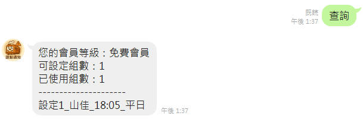

台鐵誤點即時推播，無需打開 APP，加入好友立即掌握最新動態！
立即加入 Bot系統自動監測台鐵誤點資訊，快速通知。
可自訂車站，接收專屬誤點通知。
只要使用 LINE，操作更直覺。
貼心設計，讓每日上下班更安心。
設定成功（更新）訊息示意
查詢會員等級與組別示意
設定提醒請依照以下格式輸入，例如：
星期數字對應：0=週日, 1=週一, 2=週二, 3=週三, 4=週四, 5=週五, 6=週六
刪除提醒請輸入「刪除+設定編號」，例如「刪除1」。
輸入「查詢」即可查看會員等級與使用組別。
或直接輸入車站名稱查詢該站誤點資訊。
目前本 Bot 完全免費，提供基本誤點通知功能。未來可能推出進階付費方案，但不影響現有免費用戶的使用權益。